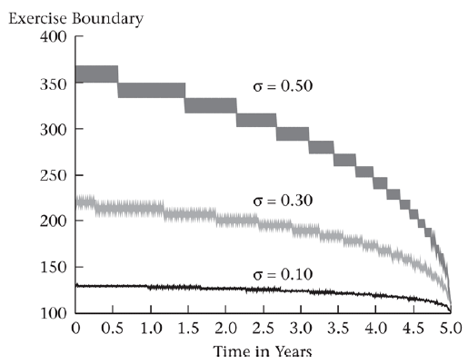

Week 12 - Binomial option pricing: selected topics
Understanding early exercise
Options may be rationally exercised prior to expiration.
By exercising, the option holder
- receives the stock and thus receives dividends
- pays the strike price prior to expiration (This has an interest cost)
- loses the insurance implicit in the call against the possibility that the stock price will be less than the strike price at expiration
If volatility is zero, the value of insurance is zero. Then, it is optimal to defer exercise as long as interest savings on the strike exceed dividends lost
\[ rK > \delta S \]
Therefore, it is optimal to exercise when
\[ S > \frac{rK}{\delta} \]
In the special case when \(r = \delta\) and \(\sigma = 0\), any in-the-money option should be exercised immediately.
When volatility is positive, the implicit insurance has value that varies with time to expiration.
The following graph displays the price, above which early exercise is optimal for a 5-year call option with \(K = \$100, r = 5\%, \delta = 5\%\)

The following graph displays the price, below which early exercise is optimal for a 5-year put option with \(K = \$100, r = 5\%, \delta = \%\)

Understanding risk-neutral pricing
A risk-neutral investor is indifferent between a sure thing and a risky bet with an expected payoff equal to the value of the sure thing.
\(p^*\) is the risk-neutral probability that the stock price will go up.
The option pricing formula can be said to price options as if investors are risk-neutral.
- Note that we are not assuming that investors are actually risk-neutral, and that risky assets are actually expected to earn the risk-free rate of return.
Pricing an option using real probabilities
Is option pricing consistent with standard discounted cash flow calculations?
- Yes, however, discounted cash flow is not used in practice to price options.
- This is because it is necessary to compute the option price in order to compute the correct discount rate.
Suppose that the continuously compounded expected return on the stock is \(\alpha\) and that the stock does not pay dividends.
If p is the true probability of the stock going up, p must be consistent with u, d, and \(\alpha\).
\[ puS + (1 - p)dS = e^{\alpha h}S \]
Solving for p gives us
\[ p = \frac{e^{\alpha h} - d}{u - d} \]
Using p, the actual expected payoff to the option one period hence is
\[ pC_u + (1 - p)C_d = \frac{e^{\alpha h} - d}{u - d}C_u + \frac{u - e^{\alpha h}}{u - d}C_d \]
At what rate do we discount this expected payoff?
- It is not correct to discount the option at the expected return on the stock, \(\alpha\), because the option is equivalent to a leveraged investment in the stock and hence is riskier than the stock.
Denote the appropriate per-period discount rate for the option as \(\gamma\).
Since an option is equivalent to holding a portfolio consisting of \(\Delta\) shares of stock and B bonds, the expected return on this portfolio is
\[ e^{\gamma h} = \frac{S \Delta}{S \Delta + B}e^{\alpha h} + \frac{B}{S \Delta + B}e^{rh} \]
We can now compute the option price as the expected option payoff discounted at the appropriate discount rate. This gives
\[ C = e^{-\gamma h}[\frac{e^{\alpha h} - d}{u - d}C_u + \frac{u - e^{\alpha h}}{u - d}C_d] \]
It turns out that this gives us the same option price as performing the risk-neutral calculation.
- Note that it does not matter whether we have the ‘correct’ value of \(\alpha\) to start with.
- Any consistent pair of \(\alpha\) and \(\gamma\) will give that same option price.
- Risk-neutral pricing is valuable because setting \(\alpha = r\) results in the simplest pricing procedure.
The binomial tree and lognormality.
The usefulness of the binomial pricing model hinges on the binomial tree providing a reasonable representation of the stock price distribution.
The binomial tree approximates a lognormal distribution.
The random walk model
It is sometimes said that stock prices follow a random walk.
Imagine that we flip a con repeatedly.
- Let the random variable Y denote the outcome of the flip.
- If the coin lands displaying a head, Y = 1; otherwise, Y = -1.
- If the probability of a head is 50%, we say the coin is fair.
- After n flips, with the \(i^{th}\) flip denoted \(Y_i\), the cumulative total, \(Z_n\), is
\[ Z_n = \sum_{i = 1}^{n}{Y_i} \]
It turns out that the more times we flip, on average the farther we will move from where we start.
We can represent the process followed by \(Z_n\), in term of the change in \(Z_n\)
\[ Z_n - Z_{n - 1} = Y_n \]
or
\[ heads: Z_n - Z_{n - 1} = +1 \]
\[ Tails: Z_n - Z_{n - 1} = -1 \]

A random walk, where with heads, the change in Z is 1, and with tails the change in Z is -1.
The idea that asset prices should follow a random walk was articulated in Samuelson (1965).
In efficient markets, an asset price should reflect all available information. In response to new information the price is equally likely to move up or down, as with the coin flip.
The price after a period of time is the initial price plus the cumulative up and down movements due to informational surprises.
modeling stock prices as a random walk
The above description of a random walk is not a satisfactory description of stock price movements. There are at least three problems with this model.
- IF by chance we get enough cumulative down movements, the stock price will become negative.
- The magnitude of the move ($1) should depend upon how quickly the coin flips occur and the level of the stock price.
- The stock, on average, should have a positive return. The random walk model taken literally does not permit this.
The binomial model is a variant of the random walk model that solves all of these problems at once.
The binomial model
The binomial model is
\[ S_{t + h} = S_t e^{(r - \delta)h \pm \sigma\sqrt{h}} \]
Taking logs, we obtain
\[ \ln{S_{t + h} / S_t} = (r - \delta)h \pm \sigma \sqrt{h} \]
- Since \(\ln(S_{t + h} / S_t)\) is the continuously compounded return from t to t + h, the binomial model is imply a particular way to model the continuously compounded return.
- That return has two parts, one of which is certain, \((r - \delta)h\), and the other of which is uncertain and generates the up and down stock prices move (plus or minus \(\sigma \sqrt{h}\).
This solves the three problems in the random walk.
- The stock price cannot become negative.
- As h gets smaller, up and down moves get smaller.
- There is a \((r - \delta)h\) term, and we can choose the probability of an up move, so we can guarantee that the expected change in the stock price is positive.
Lognormality and the binomial model
The binomial tree approximates a lognormal distribution, which is commonly used to model stock prices.
The lognormal distribution is the probability distribution that arises from the assumption that continuously compounded returns on the stock are normally distributed.
With the lognormal distribution, the stock price is positive, and the distribution is skewed to the right, that is, there is a change that extremely high stock prices will occur.
The binomial model implicitly assigns probabilities to the various nodes.

The following graph compares the probability distribution for a 25-period binomial tree with the corresponding lognormal distribution.

Alternative binomial trees
There are other ways to construct a binomial tree that approximates a lognormal distribution.
- An acceptable tree must match the standard deviation of the continuously compounded return on the asset and must generate an appropriate distribution as h → 0.
- Different methods of constructing the binomial tree will result in different u and d stock movements.
- No matter how we construct the tree, we use
\[ p^* = \frac{e^{(r - \delta)h} - d}{u - d} \]
to determine the risk-neutral probability and
\[ C = e^{-rh}[p^* C_u + (1 - p^*)C_d] \]
to determine the option value.
The Cox-Ross-Rubinstein binomial tree
The tree is constructed as
\[ u = e^{\sigma \sqrt{h}}, d = e^{-\sigma \sqrt{h}} \]
A problem with this approach is that if h is large or \(\sigma\) is small, it is possible that \(e^{rh} > e^{\sigma \sqrt{h}}\), in which case the binomial tree violates the restriction of
\[ u > e^{(r - \delta)h} > d \]
In real applications, h would be small, so the above problem does not occur.
The lognormal tree
The tree is constructed as
\[ u = e^{(r - \delta - 0.5 \sigma^2)h + \sigma \sqrt{h}}, d = e^{(r - \delta - 0.5 \sigma^2)h - \sigma \sqrt{h}} \]
All three methods of constructing a binomial tree yield different option prices for finite n, but they approach the same price as n → \(\infty\)